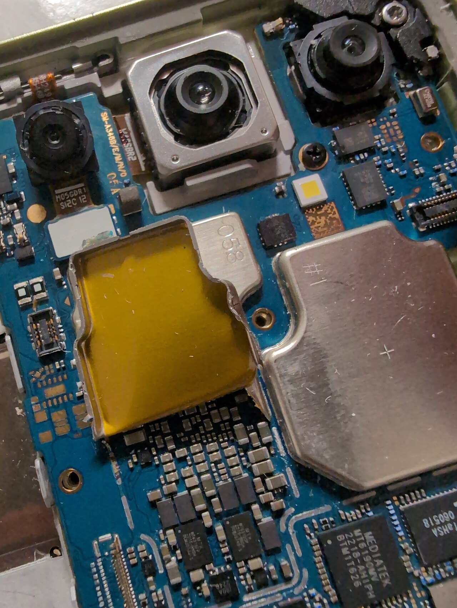
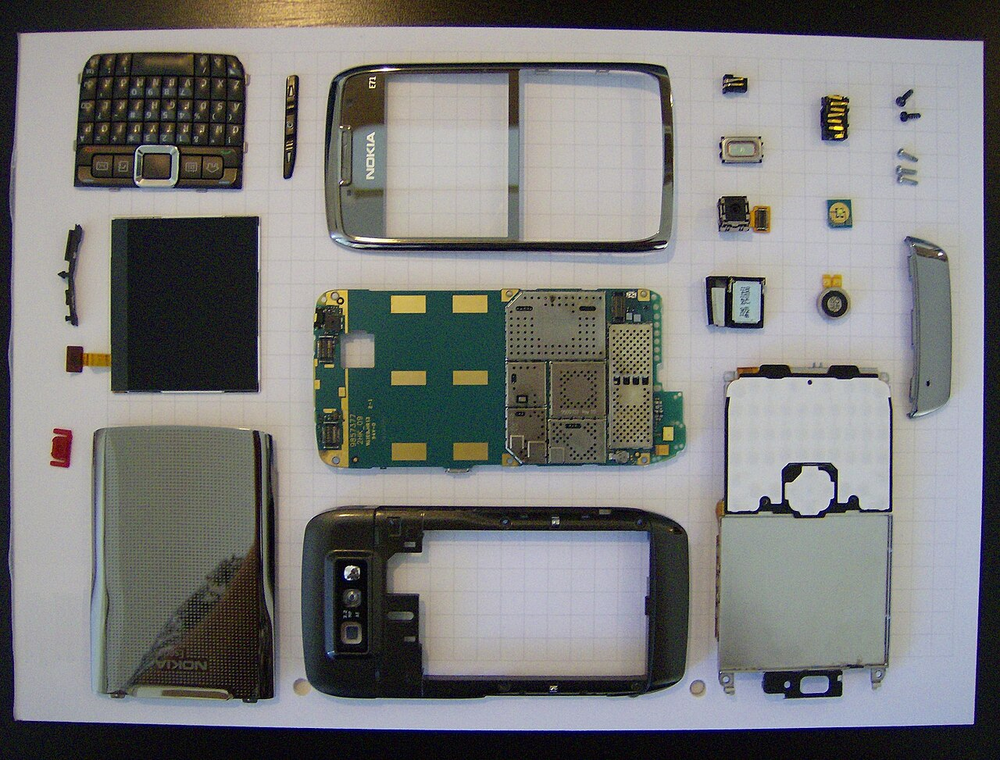
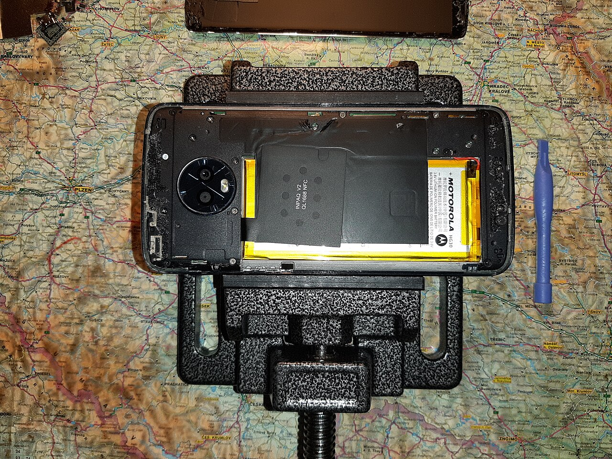
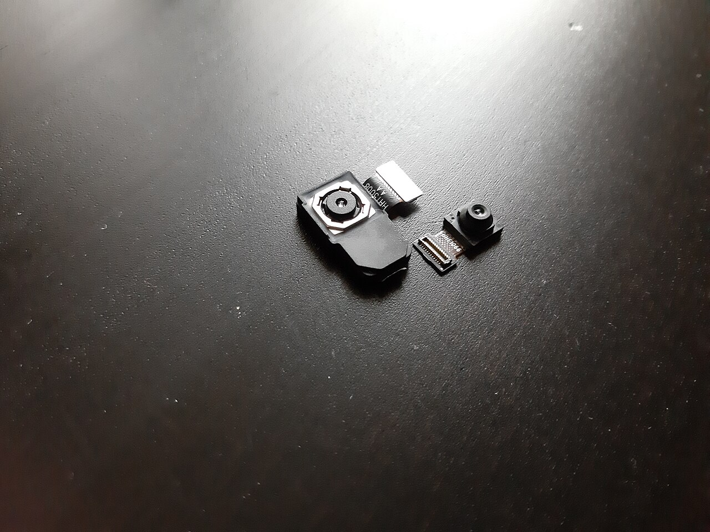
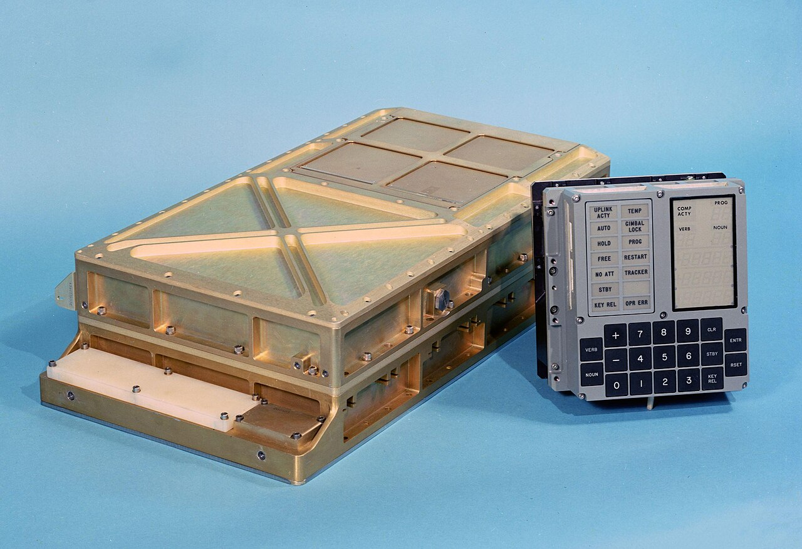
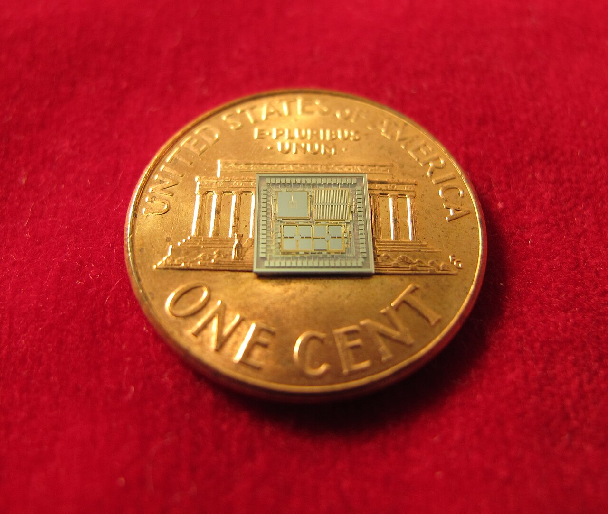
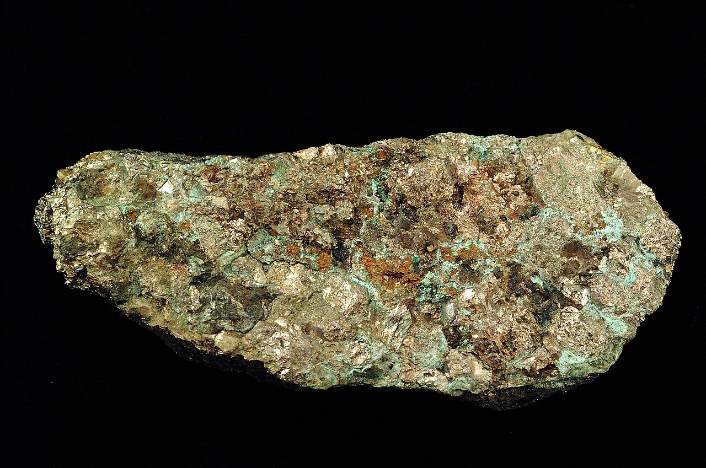
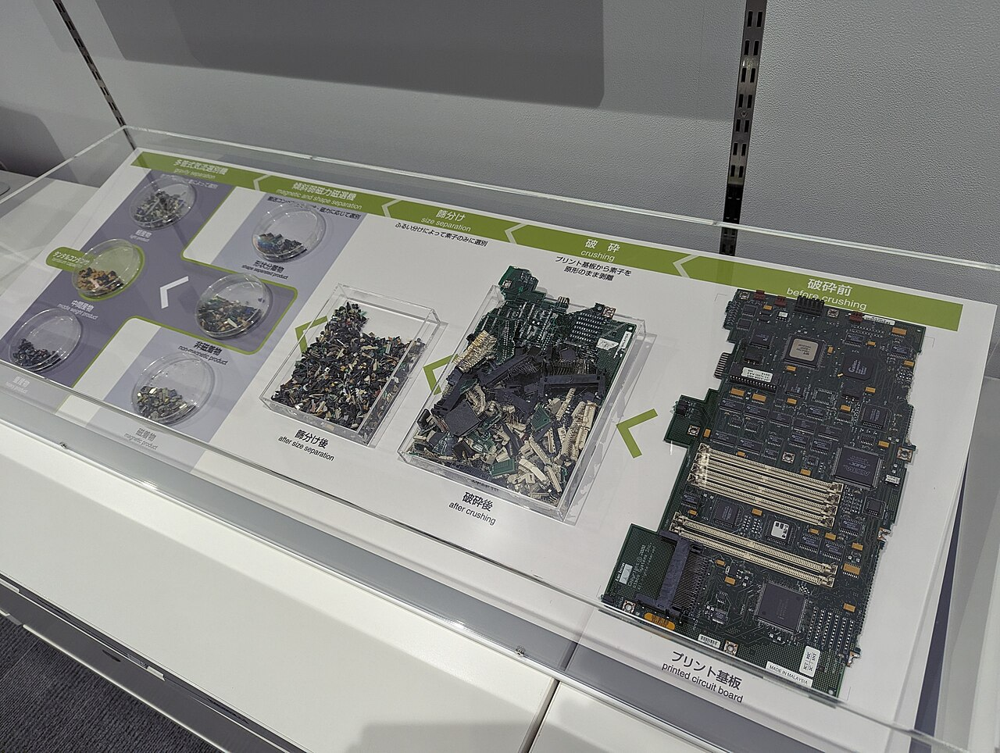

技術・発明 Technologyスマホの中には、何が入っている？
裏ぶたを開けると、いちばん場所をとっているのは電池。その横の、爪ほどのチップ1枚が頭脳です。分解写真と部品の地図、トランジスタの数のグラフで、手のひらの中をのぞいてみませんか。
2026.10.22 UP 約5分で読める 文：SOMOSOMO編集部
写真：samsung phone／Techbubble（2025年、CC0）
アメリカ・サンフランシスコ、2007年1月9日。スティーブ・ジョブズは、音楽プレーヤーと携帯電話とインターネットの道具を1つにした、新しい製品を発表しました。初代iPhoneです。指でさわる大きな画面と、傾きを感じるセンサーを持っていました。
それから20年近く。スマホは地図にも、カメラにも、財布にもなりました。それなのに、ほとんどの人は中身を見たことがありません。 手のひらにのる薄い板の中には、いったい何が入っているのでしょうか。
In a word
いちばん大きいのは電池 。残りのすき間に、爪ほどの頭脳のチップ と、カメラやセンサー、アンテナがぎっしり。材料まで数えると、数十種類の元素 が使われています。
01
Open It Up
中でいちばん場所をとっているのは、電池
スマホの表側は、ほぼ全面が画面です。画面はガラスと、光る表示の板と、指の位置を感じる薄い膜（タッチセンサー）の重ねもの。膜にはうすく電気がたまっていて、指が近づくとその場所だけ電気の量が変わります。それを読み取って、さわった位置を知るしくみです。
画面の裏をのぞくと、まず目に入るのは平たい板のような電池です。画面をいくら明るく光らせても、1日もつだけの電気をためておくには、これだけの大きさが要ります。残りの細長いすき間に、部品をぎっしり載せた基板（電子部品を並べてつなぐ板）が収まっています。

1台を、ばらばらにすると 2008年発売のNokia E71を分解し、部品を並べた写真です。真ん中の緑色の板が基板です。今のスマホより部品が多く見えるのは、キーボードがついていた時代の機種だからです。写真：Nokia e71 apart front ／Joikka（2009年、パブリックドメイン）
電池はリチウムイオン電池です。1991年に日本で初めて商品になり、開発に関わった吉野彰さんたちは2019年にノーベル化学賞を受けました。小さく軽いのにたくさんの電気をためられるので、スマホには欠かせません。
Fig.01 スマホの中の地図
電池 中でいちばん大きな部品。リチウムイオン電池です。SoC（エスオーシー） 計算や画像の処理をまとめて受け持つ、頭脳のチップ。メモリ 2種類あり、作業中のデータを一時的に置くものと、写真やアプリをしまっておくもの。カメラ レンズと、光を電気の信号に変える小さな板（イメージセンサー）の組み。センサー類 傾き、回転、方角、明るさ、気圧などを感じる小さな部品。アンテナ 電波を出し入れする部分。本体のふちに沿って入っています。スピーカー 音や着信音を出します。
見どころは、電池と基板の大きさのちがい。頭脳のSoCは、電池にくらべてずっと小さな赤い四角です。部品の位置は機種ごとにちがう模式図で、表側の画面は省いています。
基板の上の部品には、銀色の金属のふたがかぶせてあるものがあります。これは「シールド」と呼ばれ、部品どうしが出す電気のノイズ（雑音）が、ほかの部品や電波のじゃまをしないように囲っています。扉の写真で、銀色に光っている四角がそれです。


大きな電池と、小さなカメラ 左は修理のために裏ぶたを外したスマホ。いちばん大きな部品は、黄色いシールの電池です。右はスマホから取り出したカメラの部品で、どれも指先ほどの大きさです。写真：Motorola cell phone disassembly 3 ／GALAXY 2018 A7（2019年、CC0）、Huawei cameras A ／Prosinec 2020（2020年、CC0）
02
Brain on a Chip
爪ほどのチップが、月へ行ったコンピューターを超える
スマホの頭脳は「SoC（システム・オン・チップ）」と呼ばれます。計算を受け持つ部分、画面の絵を描く部分、写真をきれいにする部分などを、1枚のチップの上にまとめて作り込んだもの です。大きさは、指の爪ほどしかありません。
チップの中には、電気の流れをオン・オフする小さなスイッチ「トランジスタ」が並んでいます。2023年にAppleが発表したA17 Proには、約190億個。1971年に登場した世界初の商用マイクロプロセッサー、Intel 4004の2,250個とくらべると、800万倍以上です。
Fig.02 チップ1枚のトランジスタの数
1000億
10億
1000万
10万
1000
1970
1990
2010
Intel 4004 （1971年）2,250個Intel 386 （1985年）27万5,000個
Pentium 4 （2000年）4,200万個
Apple A7 （2013年）約10億個A17 Pro （2023年）約190億個
見どころは縦の目盛り。線1本ぶん上がるごとに100倍になります。点がほぼまっすぐ右上に並ぶのは、トランジスタの数が数年ごとに倍、倍と増えてきたしるしです。A7とA17 Proはスマホ用のチップ。出典：Wikipedia英語版「Transistor count」。
この増え方の速さは、50年あまり前の宇宙船とくらべるとよくわかります。1969年7月20日、アポロ11号の月着陸船を月面へ導いたのは「アポロ誘導コンピューター」でした。集積回路（IC、たくさんのトランジスタを1枚のチップにまとめたもの）を使った、最初期のコンピューターの1つです。
重さは約32kg。スマホ（約200g）の160倍ほどです。計算の速さのもとになる時計（クロック）は1秒に約200万回（2.048MHz）、作業用の記憶は今の単位でおよそ4KB（キロバイト）でした。
A17 Proを積んだiPhone 15 Proなら、クロックは計測で1秒に最大約38億回（約3.78GHz）で約1,800倍、作業用の記憶は8GBで約200万倍。月へ行った32kgの頭脳をはるかに超える力が、ポケットに収まっているのです。

月へ行ったコンピューター 左の金色の箱がアポロ誘導コンピューターの本体で、横幅は約61cm。右は宇宙飛行士が数字を打ち込んで操作した表示とキーボードです。写真：Agc view ／ドイツ語版Wikipediaの利用者 Grabert（2005年アップロード、パブリックドメイン）
03
Sensing the World
画面が回るのは、小さな「おもり」が動くから
スマホを持ったまま横向きにすると、画面も横向きに切りかわります。スマホは、どうやって自分の向きを知っているのでしょうか。答えは「加速度センサー」。数mm角のチップの中に、髪の毛よりずっと細い部品でできた、ばねでつるした小さなおもり が入っています。
スマホを立てると、おもりは重力で少し下へずれます。おもりと、そのそばに固定された板とのすき間が変わると、板にたまる電気の量も変わります。この変化を読み取れば、重力がどちらを向いているか、つまりスマホの傾きがわかるのです。
Fig.03 加速度センサーの中の「おもり」
スマホを立てると
おもり
重力
おもりが下へずれ、
下のすき間がせまくなる
横向きに持つと
おもり
この向きには重力がかからず、
上下のすき間は同じ
見どころは、赤いおもりと黒い板のすき間。左ではすき間が上下でちがい、右では同じです。このちがいを電気の量の変化として読み取ります。1つの向きだけを描いた模式図で、実物は縦・横・奥行きの3つの向きを同時に測っています。
同じ原理で、歩くときの揺れから歩数も数えられます。となりには、回転の速さを測る「ジャイロセンサー」、地球の磁気から方角を知る「電子コンパス」、気圧から高さの変化をつかむセンサーなども並んでいます。
2007年の初代iPhoneにも、加速度センサーと、顔が近づいたことを知る近接センサー、明るさを測るセンサーが入っていました。このうち加速度センサーのような部品は、半導体と同じ技術でシリコンを細かく削って作られ、「MEMS（メムス）」と呼ばれます。機械の部品を、チップの大きさまで縮めたもの です。

1セント硬貨の上の、センサー アメリカのミシガン大学が試作した、3つの加速度センサーと3つのジャイロセンサー、正確な時計を1つにまとめたチップ。スマホ用の部品ではありませんが、MEMSの小ささがよくわかります。写真：DARPA TIMU Michigan Penny ／University of Michigan（2012年、パブリックドメイン）
04
Made of Elements
1台のスマホは、小さな「周期表」でできている
部品をさらに細かく見ていくと、たくさんの元素に行き当たります。アメリカのイェール大学などの研究チームは2015年の論文で、今のコンピューターのチップ1枚には60種類以上の元素が使われている と書きました。周期表に並ぶ元素は118種類ですから、その半分ほどにあたります。
イギリスのプリマス大学は2019年、スマホ1台をミキサーで粉にして中身を調べました。出てきたのは、鉄33g、ケイ素13g、クロム7g。さらにタングステン900mg、ネオジム160mg、銀90mg、金36mgなども含まれていました。ネオジムは、スピーカーや振動のモーターに使う強い磁石の材料です。

電池の材料のもとになる石 コバルトをふくむ鉱物、輝コバルト鉱。長さ9cmほどの標本です。スマホの電池の材料に使われてきたコバルトは、こうした石から取り出されます。写真：Cobaltite ／Darla Sondrol（2001年、CC0）
材料の産地は、世界のごく一部にかたよっています。スマホの電池に使われてきたコバルトは、2025年の推計で、世界で掘り出された量の約73%がアフリカのコンゴ民主共和国産でした。
電気を一時的にためる小さな部品（コンデンサ）の材料になる「タンタル」も、2025年の推計で、世界の採掘量の約半分が同じ国のものでした。
コンゴ民主共和国の東部などでは、タンタルやスズ、タングステン、金の取引が、武装勢力の資金源になってきたといわれます。そのためアメリカやEUなどは、これらを「紛争鉱物」と呼び、企業に調達先を調べて報告することを求めています。スマホのメーカーの多くも、使う鉱物がどこから来たのかを調べて公表するようになりました。

基板から、資源を取り出す 茨城県つくば市の展示。右のパソコンの基板を砕き、ふるいや磁石、風の力で部品を種類ごとに分けていくようすを並べています。左上の緑の枠には「タンタルコンデンサ」と書かれています。写真：Electronic junk separation in view of recycling ／Syced（2024年、CC0）
05
By the Numbers
チップ1枚に、60種類以上の元素
約190億個 スマホ用チップA17 Proに入っているトランジスタ2023年発表（Wikipedia英語版）
60種類以上 今のコンピューターのチップ1枚に使われている元素。周期表の約半分Graedel ほか、PNAS（2015年）
約73% 世界で掘り出されたコバルトのうち、コンゴ民主共和国産の割合2025年の推計、USGS（2026年）
Here's the Fun Part
ここが面白い！
プリマス大学の分析によると、スマホに含まれる金の割合は、金の含まれる割合が高い（品位が高い）とされる金鉱石のおよそ100倍、タングステンは約10倍でした。重さあたりで見れば、スマホは山の鉱石よりずっと豊かな「鉱山」 なのです。
使い終わった電子機器にねむる金属は「都市鉱山」と呼ばれます。物質・材料研究機構は2008年、日本の都市鉱山にある金を約6,800トンと見積もりました。当時、世界で確認されていた金の埋蔵量の約16%にあたるという推計です。
東京2020大会では、全国から集めた小型家電などから金・銀・銅を取り出し、約5,000個のメダルをすべて作りました。報道によると、取り出された金は約32kg。次に引き出しの中の古いスマホを見つけたら、捨てる前に回収ボックスを探してみてください。その中には、小さな金鉱が入っています。
出典・参考
iPhone (1st generation) （Wikipedia 英語版）：2007年1月9日にサンフランシスコのMacworldで発表、音楽プレーヤー・携帯電話・インターネット通信機を1つにしたと紹介、3軸加速度センサー・近接センサー・環境光センサーLithium-ion battery （Wikipedia 英語版）：1991年にソニーなどが商品化、2019年のノーベル化学賞（グッドイナフ、ウィッティンガム、吉野彰）System on a chip （Wikipedia 英語版）：CPUやGPUなどを1枚のチップにまとめたもの、スマホで広く使われるTransistor count （Wikipedia 英語版）：Intel 4004（1971年）2,250個、Intel 80386（1985年）27万5,000個、Pentium 4（2000年）4,200万個、Apple A7（2013年）10億個、Apple A17（2023年）190億個Apple A17 （Wikipedia 英語版）：A17 Proは2023年9月12日発表、トランジスタ190億個、CPUは最大3.78GHz、iPhone 15 Proの作業用メモリは8GBApollo Guidance Computer （Wikipedia 英語版）：重さ32kg、2.048MHzのクロック、16ビットの語、消去できる記憶2,048語・読み出し専用36,864語、Block IIは約2,800個のIC（主に3入力NORゲート2つ入り）、シリコンICを使った最初のコンピューター、大きさ61×32×17cmAccelerometer （Wikipedia 英語版）：MEMS加速度センサーはばねでつるしたおもりの動きを、固定した電極とのあいだの静電容量の変化で読み取る、携帯機器で画面の縦横の切りかえに使われる、ジャイロとともに使われるOn the materials basis of modern society （T. E. Graedel ほか、PNAS 第112巻、2015年）：今のコンピューターのチップは60種類以上の元素を使うTantalum （USGS Mineral Commodity Summaries 2026）：2025年の推計で、コンゴ民主共和国が世界の採掘量の約半分Tokyo 2020 Medal Project （dentsu-ho、大会組織委員会の発表による）：金約32kg・銀約3,500kg・銅約2,200kgScientists use a blender to reveal what's in our smartphones （プリマス大学、ScienceDaily掲載、2019年3月14日）：鉄33g・ケイ素13g・クロム7g・タングステン900mg・ネオジム160mg・銀90mg・金36mg、金は高品位の鉱石の約100倍、タングステンは約10倍Mineral Commodity Summaries 2026: Cobalt （アメリカ地質調査所、2026年2月）：2025年の推計でコンゴ民主共和国が世界の採掘量の約73%、コバルトの最大の用途はリチウムイオン電池Tantalum （Wikipedia 英語版）：主な用途は小さくて容量の大きいコンデンサ、携帯電話に向く、2021年1月のアメリカ地質調査所のデータで世界の採掘量の4割近くがコンゴ民主共和国、紛争資源とされるConflict resource （Wikipedia 英語版）：タンタル・スズ・タングステン・金を紛争鉱物とし、アメリカやEUなどが企業に報告を求めるJapan's "Urban Mines" are Comparable to the World's Leading Resource Nations （物質・材料研究機構、2008年1月11日）：日本の都市鉱山の金は約6,800トン、世界の埋蔵量4万2,000トンの約16%「都市鉱山からつくる！みんなのメダルプロジェクト」の終了について （環境省、2019年4月2日）：使用済み小型家電から東京2020大会のメダルを作るプロジェクト、2019年3月31日に回収を終了Tokyo unveils 2020 Olympic medals, made from more than 6 million recycled cellphones （CBS News、2019年7月24日）：約5,000個のメダル、回収した小型家電は約8万トン、取り出された金は32kg・銀3,500kg・銅2,200kg写真：すべてパブリックドメインまたは CC0。クレジットはそれぞれの写真の下に記しています